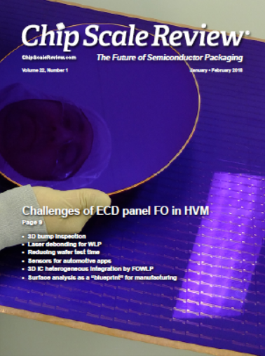
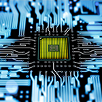

Current Issue
Subscribe NowJanuary • February 2018; Volume 22, Number 1
Cover Photo
A 300mm wafer and a 510 x 515mm panel are about to be electroplated for packaging. Electroplating at the panel scale is no longer a barrier for form factor adoption in packaging. Tokyo Electron has partnered with customers to develop cutting-edge processing equipment, such as the StratusTM P300 and P500 that can process the substrates shown to create fine packaging features at superior uniformities.
Cover photo courtesy of Tokyo Electron.
Read the issue Download PDF Subscribe

 Look to Bourns’ Specialty Engineering and Manufacturing Services (SEMS) for extensive product and process development expertise in: Microelectronic MCM packaging -- State-of-the-art ceramic and plastic (LCP) lid sealing process – Advanced IC interconnects with high-precision wire bonding – Precision component placement on circuit substrates. As a highly reliable Packaging-as-a-Service (PaaS) provider, we help fabless IC companies miniaturize and productize their chip-level designs into MMICs, CMOS, SiGe, GaAs, InP, GaN or SiC Multiple-Chip Modules, 100-400Gbps Optoelectronic Packages or RF/Microwave Board Assemblies.
Look to Bourns’ Specialty Engineering and Manufacturing Services (SEMS) for extensive product and process development expertise in: Microelectronic MCM packaging -- State-of-the-art ceramic and plastic (LCP) lid sealing process – Advanced IC interconnects with high-precision wire bonding – Precision component placement on circuit substrates. As a highly reliable Packaging-as-a-Service (PaaS) provider, we help fabless IC companies miniaturize and productize their chip-level designs into MMICs, CMOS, SiGe, GaAs, InP, GaN or SiC Multiple-Chip Modules, 100-400Gbps Optoelectronic Packages or RF/Microwave Board Assemblies.
Industry News
IWLPC Technical Committee Announces Best Presentation & Papers Awards for 2017
San Jose, California – USA – The IWLPC Technical Committee is pleased to announce the Best of Conference, Best Presentation & Best Papers in WLP, 3D, Advanced Manufacturing and Test tracks as chosen by the technical committee and attendees based on technical merit, relevance, originality, knowledge of subject, quality of material, and quality of presentation. ...>>Emmanuel Sabonnadiere named LETI CEO
GRENOBLE, France – Nov. 28, 2017 – Leti, a technology research institute of CEA Tech, today announced that Emmanuel Sabonnadiere has been named CEO, succeeding Marie-Noelle Semeria.Sabonnadiere, who has more than 25 years of executive leadership experience in a variety of large technology environments, joins Leti from CEA Tech, where he led the industrial-partnership program. He brings a strong background in new-technology development with broad private-sector expertise in operational excellence, team building and guiding multicultural organizations in business transformation in Europe and globally. ...>>

Heterogeneous integration paving the way beyond silicon scaling limits
As in prior years, the in-depth presentations at this year's IWLPC, covering a broad array of the industry's critical challenges, did not disappoint. A series of keynote presentations and papers included a couple of major announcements that will be discussed below. Of special note, several keynote speakers focused on heterogeneous integration and the added complexities of migration to large rectangular panels. The session presentations reported impressive progress in material science, manufacturing processes, new equipment, metrology, and testing. A few selected highlights, only limited by the allotted space, are included below. ...>>Industry Events
ISS Europe to Spotlight Key Industry Issue of Workforce Development
Dublin, Ireland ─ January 22, 2018 ─ STEM education and a talent pipeline, critical issues to electronics manufacturing executives sharpening their competitive edge in the global supply chain, will be key focus areas at SEMI Europe’s Industry Strategy Symposium (ISS Europe). Day two of the flagship business event – March 4-6 in Dublin, Ireland – will feature two experts focusing on how companies can “Gain, Train and Retain World-Class Talent.” ...>>The European 3D Summit for the first time in Dresden, Germany
Dresden, Germany - January 22-24, 2018 – This year’s 6th edition of SEMI European 3D Summit will continue to explore a wider scope of 3D topics that will include 3DIC Through-Silicon-Via (TSV) technology and its challenges, but also talks on 2.5D, 3D FO-WLP/ e-WLB, Glass interposers, thermal management and 3D alternative technologies in order to create Heterogeneous Integration and High Density Systems for different applications. ...>>
<%- data.ads %>